INTRODUÇÃO
O sistema Reino Mágico foi criado para melhorar o fluxo da loja, conta com novas ferramentas pensadas para otimizar processos e contabilizar de forma precisa seus resultados.
Neste conteúdo você encontrará o manual de utilização do sistema Reino Mágico, com demonstrativos na prática de como utilizá-lo.
1. INICIO
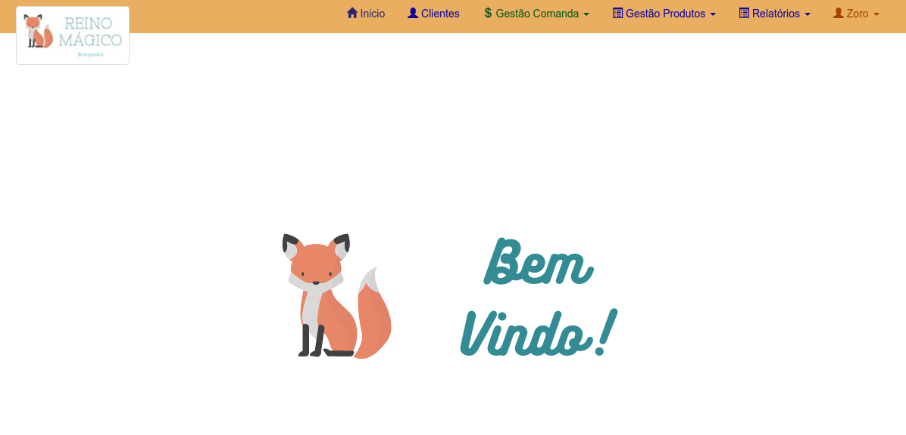
Tela após realizar o login. Exibe o menu para navegação.
Contendo as opções:
-
Cliente , para gerenciar um cliente.
-
Gestão Comanda 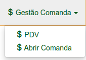 , onde tem os sub menus PDV e Comanda .
- Gestão Produtos 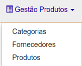 , onde contem os sub menus: Categorias, Fornecedores e Produtos (local para verificar estoque e cadastrar produtos).
- Relatórios 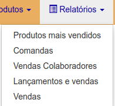 , onde contem os sub menus: Produtos mais vendidos, Comandas, Vendas, Vendas Colaboradores, Lançamentos e vendas e Comandas.
- Lançamentos
 , cadastrar entrada e saída.
, cadastrar entrada e saída. - Clique no nome do colaborador, 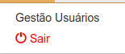, aparecerá os sub menu: Sair (sair do sistema), Gestão Usuário (gerenciar usuários).
2. COLABORADOR
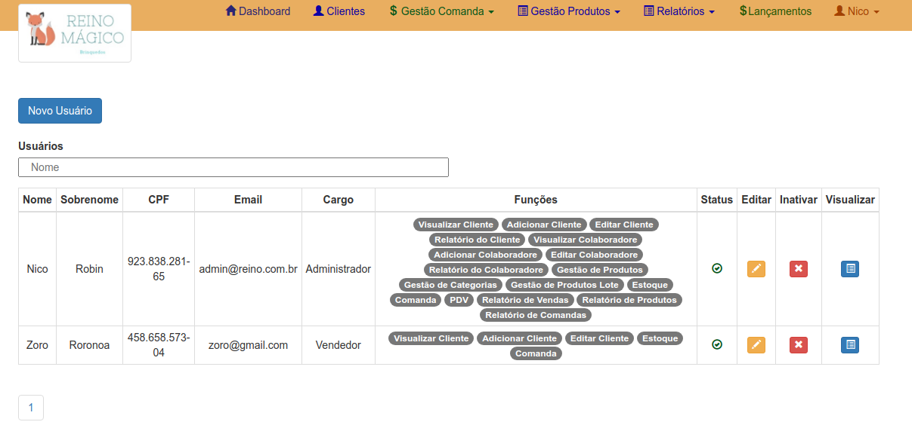
Na tela “Colaborador” você terá acesso à todos os colaboradores cadastrados.
Para adicionar um colaborador, clique na opção Novo Usuário 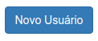, localizado acima da tabela.
Veja que na tabela há o campo Editar . Clicando nele será direcionado para edição do colaborador.
Também na tabela há a opção Inativar 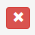. Clicando nele irá inativar o colaborador, não podendo o mesmo acessar o sistema.
Por fim o botão Visualizar . Clicando nele, será direcionado para tela de visualização de dados relacionado a esse colaborador, como nome, cargo, quantidade de vendas etc.
2.1 Novo Colaborador
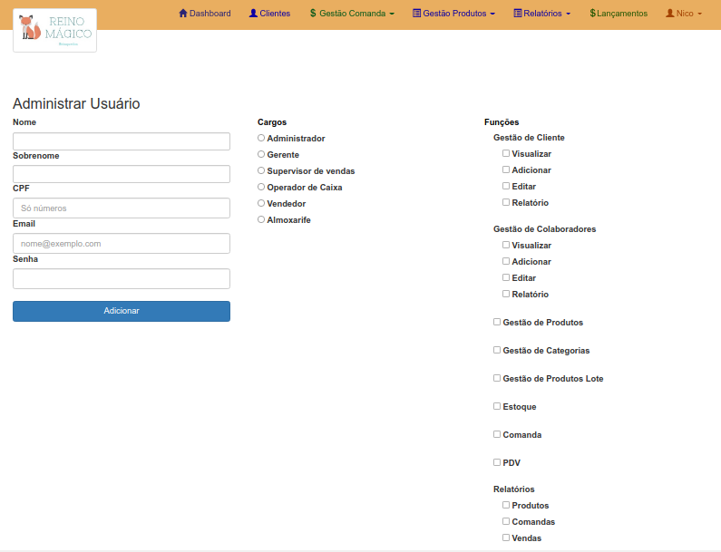
Novo colaborador a ser cadastrado. Preencha os campos como, nome, sobrenome, CPF, e-mail e a senha para login. Selecione o cargo do novo colaborador e verá que as funções relacionadas serão selecionadas. Caso precise alterar ou selecionar a mais, basta apenas clicar sobre a função desejada.
Clique em Adicionar, para salvar as informações.
2.2 Visualizar Colaborador
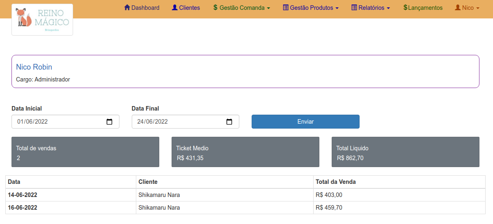
A tela de visualizar colaborador irá apresentar o nome e cargo do respectivo. Logo a baixo terá todas as vendas já realizadas, o ticket médio delas e o total das vendas.
Caso queira um período especifico, selecione uma Data Inicial e uma Data Final. Clique em Enviar.
O total de vendas, ticket médio e total liquido irão atualizar de acordo com o período selecionado. E abaixo irá aparecer as vendas realizadas, com a data, o cliente (caso tenha) e o valor realizado da venda.
2.3 Editar Colaborador
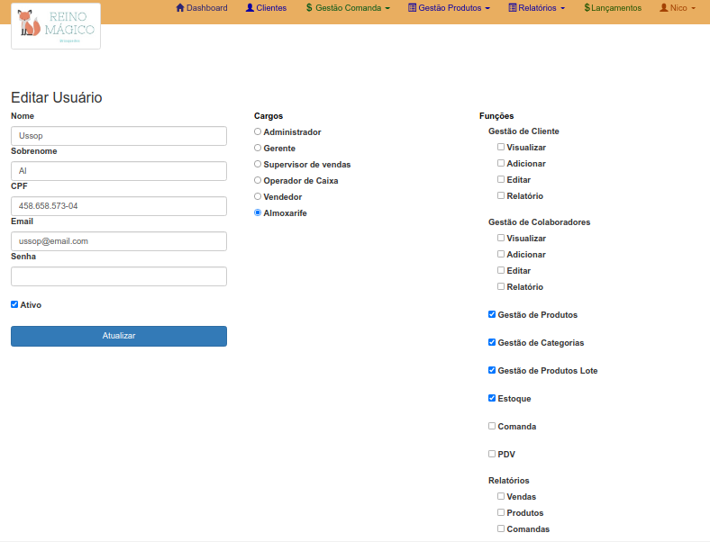
A tela de editar colaborador irá apresentar todos as informações cadastradas até então do colaborador.
Realize a edição do campo desejado. Cliente em Atualizar para salvar as informações.
3. CATEGORIAS
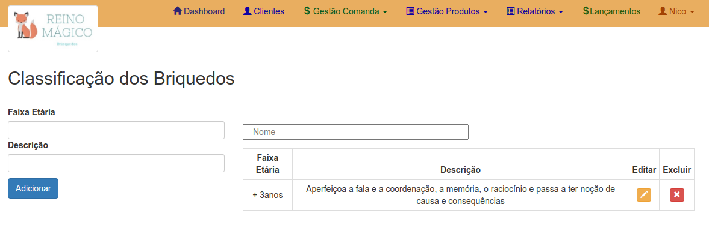
O cadastramento da categoria é necessário para incluir os brinquedos no sistema.
Preencha os campos, faixa etária e uma breve descrição. Clique em Adicionar, para ser salvo as informações.
Note que ao lado do formulário há uma tabela, nela aparecerá a faixa etária cadastrada e sua descrição.
Veja que na tabela há o campo Editar . Clicando nele será direcionado para edição da categoria.
Também na tabela há a opção Excluir . Clicando nele irá excluir a categoria do sistema.
3.1 Editar Categoria
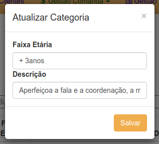
Uma modal é apresentada com as informações da categoria já cadastradas.
Altere o campo que desejar e clique em Salvar 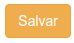, para salvar as informações editadas.
4. PRODUTOS
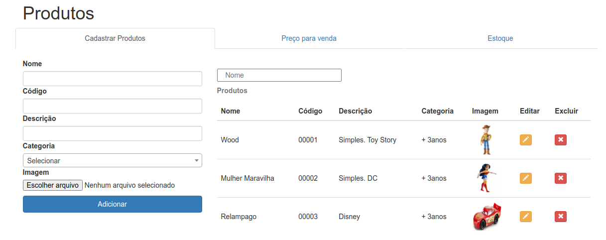
Na tela de produto há um formulário para preenchimento de um brinquedo a ser cadastrado.
Preencha os campos, nome, código, descrição, categoria e selecione uma imagem do brinquedo. Clique em Adicionar, para cadastrar um brinquedo no sistema.
Ao lado do formulário observe a tabela dos produtos já cadastrados.
Veja que na tabela há o campo Editar . Clicando nele será direcionado para edição do produto.
Também na tabela há a opção Excluir . Clicando nele irá excluir o produto do sistema.
4.1 Editar Produto
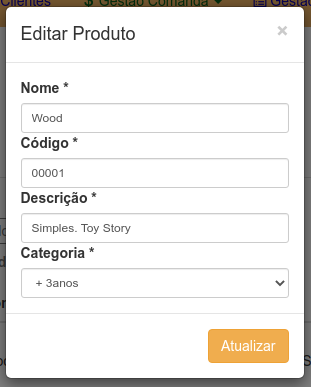
Uma modal é apresentada com as informações do produto já cadastradas.
Altere o campo que desejar e clique em Atualizar 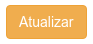, para salvar as informações editadas.
5. LOTE
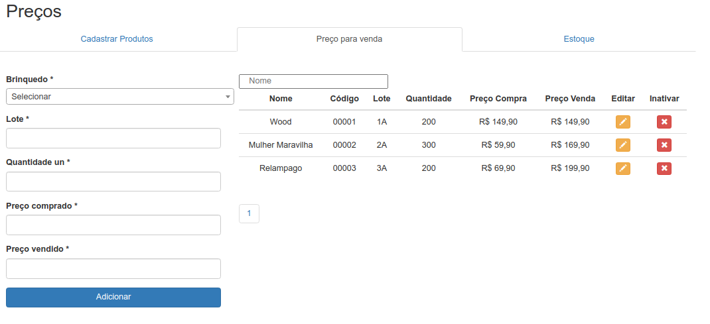
Na tela preço para venda é onde irá cadastrar um lote de brinquedos que irão aparecer nas telas comanda e PDV.
Preencha os campos, lote, quantidade no lote, preço de compra, preço de venda e selecione um brinquedo que já foi cadastrado. Clique em Adicionar, para cadastrar o lote no sistema.
Note que ao lado do formulário há uma tabela, nela aparecerá os lotes já cadastrados.
Veja que na tabela há o campo Editar . Clicando nele será direcionado para edição do lote.
Também na tabela há a opção Inativar . Clicando nele irá inativar o lote do sistema.
5.1 Editar Lote
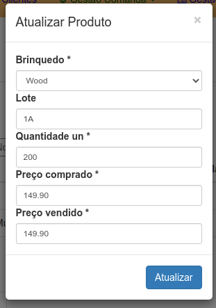
Uma modal é apresentada com as informações do lote já cadastradas.
Altere o campo que desejar e clique em Atualizar 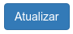, para salvar as informações editadas.
5.2 Inativar lote
A inativação do lote é possível quando não há nenhuma venda relacionada ao brinquedo cadastrado.
6. Estoque
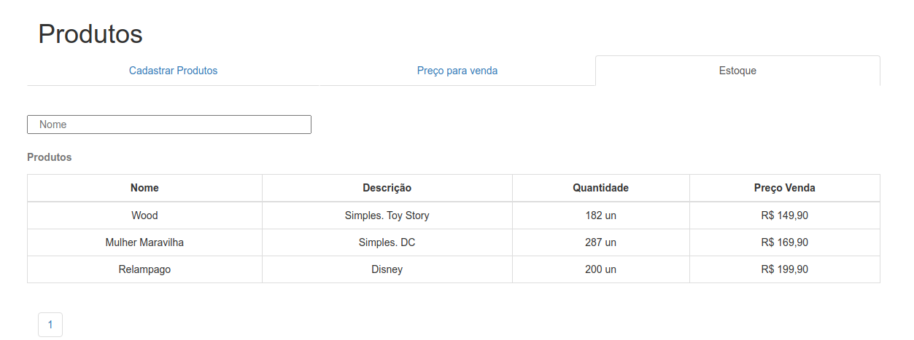
Na tela Estoque pode se visualizar todos os brinquedos cadastrados via lote. A tabela mostra o nome do brinquedo, sua descrição, a quantidade em estoque e o preço para venda.
7. CLIENTE
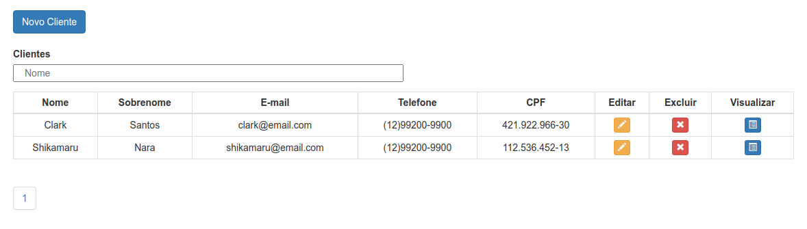
Na tela “Cliente” você terá acesso à todos os clientes cadastrados.
Para adicionar um cliente, clique na opção Novo Cliente 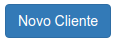, localizado acima da tabela.
Veja que na tabela há o campo Editar . Clicando nele será direcionado para edição do cliente.
Veja também que na tabela há o botão Visualizar . Clicando nele, será direcionado para tela de visualização de dados relacionado a esse cliente.
7.1 Novo Cliente
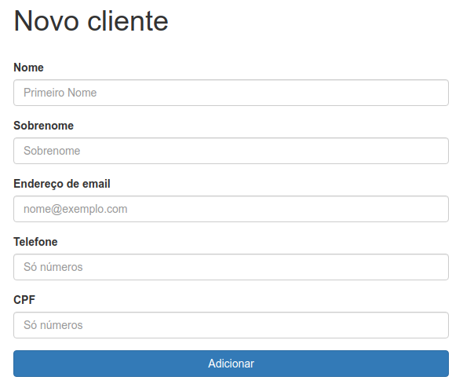
Novo cliente a ser cadastrado. Preencha os campos, nome, sobrenome, CPF, e-mail e telefone.
Clique em Adicionar, para salvar as informações.
7.2 Visualizar Cliente
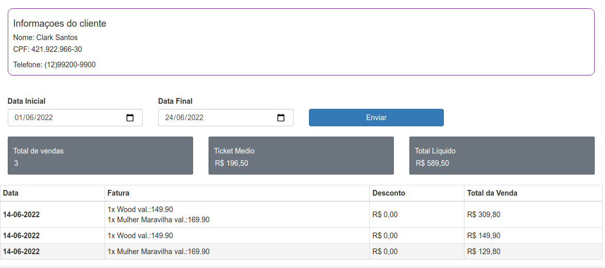
A tela de visualizar cliente irá apresentar o nome, o CPF e telefone do respectivo. Logo a baixo terá todas as vendas já realizadas, o ticket médio delas e o total das vendas.
Caso queira um período especifico, selecione uma Data Inicial e uma Data Final. Clique em Enviar.
O total de vendas, ticket médio e total liquido irão atualizar de acordo com o período selecionado. E abaixo irá aparecer as vendas realizadas, com a data, os itens, desconto (caso tenha) e o valor realizado da venda.
7.3 Atualizar Cliente
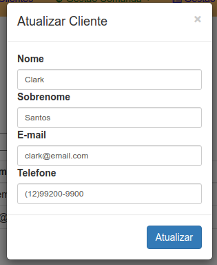
Uma modal é apresentada com as informações do cliente já cadastradas.
Altere o campo que desejar e clique em Atualizar , para salvar as informações editadas.
8. ABRIR COMANDA
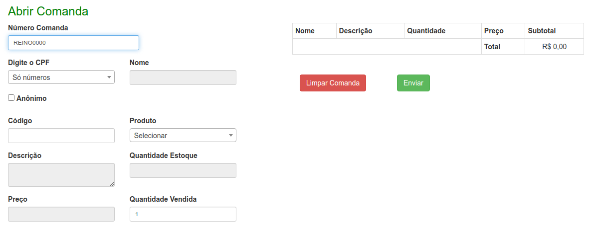
Na tela Abrir Comanda é onde se inicia uma venda.
Primeiro clique no campo Número Comanda, escaneie a comanda (fisica). Digite o CPF do cliente. É necessário que o cliente já esteja cadastrado no sistema. Escaneie o código do brinquedo. Clique em Enviar. 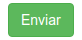
Cliente sem cadastro
Digitado o CPF e o cliente não foi encontrado. Clique na opção Anônimo. Depois em Enviar. (Assim os itens ficaram salvos na comanda).
Vá a tela cliente e verifique o cadastro do mesmo.
Caso o cliente não tenha cadastro, clique em Novo Cliente e o adicione.
Cadastrando o cliente, volte a tela Abrir Comanda para editar a comanda já salva.
Editar comanda salva
Escaneie a comanda que já possui itens salvos.
Faça a alteração (brinquedos ou inclusão do cliente).
Clique em Enviar.
Retirar um brinquedo da lista da comanda
Ao estar incluindo brinquedos na lista da comanda e cliente desiste de compra-lo.
Cliente no ícone . O brinquedo então será excluído.
Quantidade de brinquedos
Caso o cliente deseja comprar mais brinquedo do mesmo modelo, antes de escanear o código:
Vá na opção quantidade vendida. Altere a quantidade desejada.
Escaneie o código do brinquedo.
Código do produto não escaneia
O escaner não está funcionando, ou o código do brinquedo está com falha.
No campo Produto comece a escrever o nome do brinquedo. Opções irão ser apresentadas para ser selecionadas.
Clique no brinquedo respectivo.
Irá aparecer as informações relacionadas, como descrição, preço, quantidade em estoque.
Clique em Adicionar . O brinquedo irá ser adicionado na lista de brinquedos da comanda.
9. PDV - Ponto de venda

A tela PDV (Lançar Venda) é onde se finaliza a comanda.
Primeiro clique no campo Número Comanda, escaneie a comanda.
As informações irão ser mostradas na tela.
Clique em Finalizar Venda. 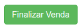
Abrirá a forma de pagamento a ser realizado.
Selecione a opção desejada da forma de pagamento, no campo 1ª Forma de pagamento.
Clique em Gravar 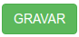, para finalizar a venda.
Cliente não possui comanda
Cliente escolhe o brinquedo e foi ao caixa, sem passar por um vendedor.
No campo Número Comanda aperte enter pelo teclado.
Irá desbloquear os campos para incluir cliente e briquedos, assim como na abertura de comanda.
Desconto
A venda será realizada com desconto.
Abaixo da tabela de Brinquedos há o campo Desconto, nele coloque o valor (R$) a ser descontado na venda.
Clique em Gravar , para finalizar a venda.
Permissão de desconto
O valor a ser dado de desconto excede 10% do valor total da venda.
O sistema irá emitir um aviso.
Clique em OK para dar continuidade e em Cancel para cancelar a ação.
Clicou em OK , então aparecerá a modal para permitir o desconto.
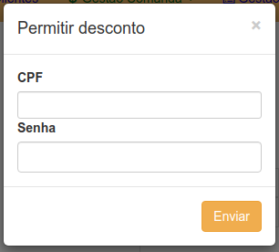
Os dados precisam ser preenchidos pelo Gerente.
Clique em Enviar, para autorizar.
Informações corretas, será direcionado para a forma de pagamento.
Duas formas de pagamento
Cliente deseja pagar com duas formas de pagamento.
Coloque o valor correspondente da primeira forma de pagamento.
Clique no ícone 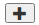.
Selecione qual será a segunda forma de pagamento.
O valor da segunda forma de pagamento já estará com o faltante da venda.
Clique em Gravar , para finalizar a venda.
Alterar
Esta nas formas de pagamento, porém precisa alterar algum brinquedo.
Clique no botão Voltar 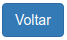 .
Será direcionado aos campos de venda, novamente.
9.1 Imprimir comprovante de venda
Após clicar no botão Gravar . A venda será finalizada e o sistema emitira um alerta na tela, se deseja imprimir o comprovante de venda.
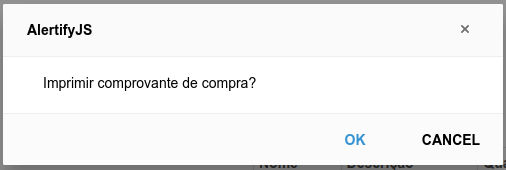
Clique em OK para imprimir o comprovante de venda ou clique em Cancel para cancelar a ação.
Clicou em OK , abrirá uma nova janela onde estará o comprovante para impressão.
10. Lançamentos
Na tela Lançamentos é onde irá cadastrar as entradas e saídas de dinheiro.
Preencha os campos, descrição, data, valor e selecione se é entrada ou saída do valor.
Clique em Adicionar, para cadastrar o lançamento no sistema.
Note que ao lado do formulário há uma tabela, nela aparecerá os lançamentos já cadastrados.
Também na tabela há a opção Excluir . Clicando nele irá excluir o lançamento do sistema.
11. Relatórios
A opção Relatórios no menu superior irá ter alguns relatórios que o sistema realiza.
São eles:
- Brinquedos mais vendidos
- Comandas
- Vendas colaboradores
- Lançamentos e vendas
- Vendas
11.1 Brinquedos mais vendidos
Selecione período desejado, selecione uma Data Inicial e uma Data Final.
Clique em Enviar.
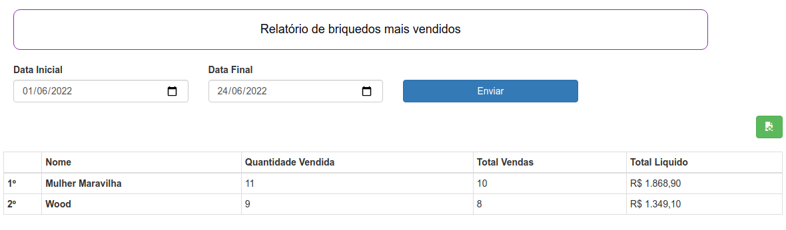
Aparecerá uma lista dos brinquedos mais vendidos nesse período. Com os campos, posição, nome do brinquedo, quantidade vendida, total de vendas, total liquido.
Relatório PDF
Para realizar o download em PDF do relatório
Clique no ícone 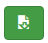
O download será iniciado.
11.2 Comandas
A tela Comandas pode-se verificar o status das comandas.
Selecione período desejado, selecione uma Data Inicial e uma Data Final.
Clique em Enviar.
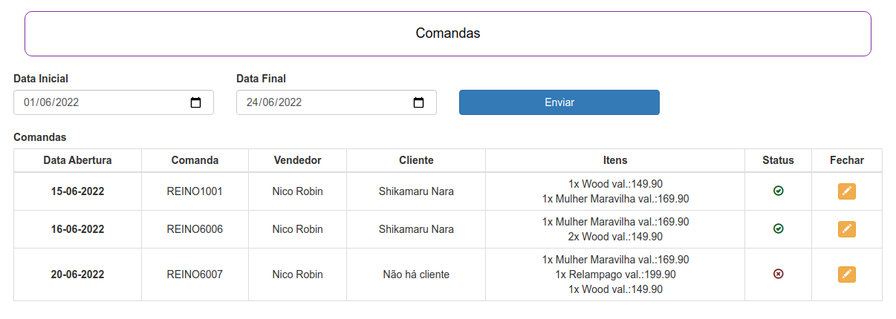
Aparecerá uma lista das comandas realizadas nesse período .
Comandas com o status 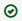a comanda já foi finalizada.
Comandas com o status 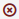estão em aberto.
Finalizar comanda
Cliente desistiu da compra e a comanda ficou em aberto.
Clique no ícone .
11.3 Vendas Colaboradores
A tela vendas de colaboradores mostra todos os colaboradores que realizaram vendas.
Selecione período desejado, selecione uma Data Inicial e uma Data Final.
Clique em Enviar.
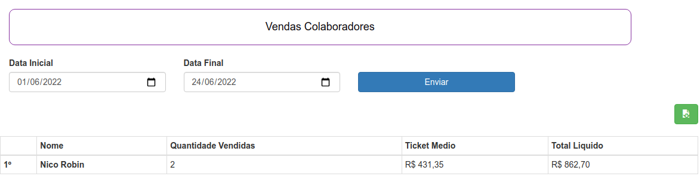
Aparecerá uma lista dos colaboradores com vendas nesse período. Com os campos, posição, nome do colaborador, quantidade vendida, ticket médio e total liquido.
Relatório PDF
Para realizar o download em PDF do relatório
Clique no ícone
O download será iniciado.
11.4 Lançamento e vendas
A tela de Relatório de vendas e lançamentos é mostrado o saldo do mês.
Selecione período desejado, selecione uma Data Inicial e uma Data Final.
Clique em Enviar.

Aparecerá uma lista com os campos, mês, vendas realizadas, entradas de lançamentos, saída de lançamentos e o saldo (soma a entrada com as vendas e subtrai as saídas).
Relatório PDF
Para realizar o download em PDF do relatório
Clique no ícone
O download será iniciado.
11.5 Vendas
A tela Vendas apresenta todos as vendas realizada pelo período selecionado.
Selecione período desejado, selecione uma Data Inicial e uma Data Final.
Clique em Enviar.
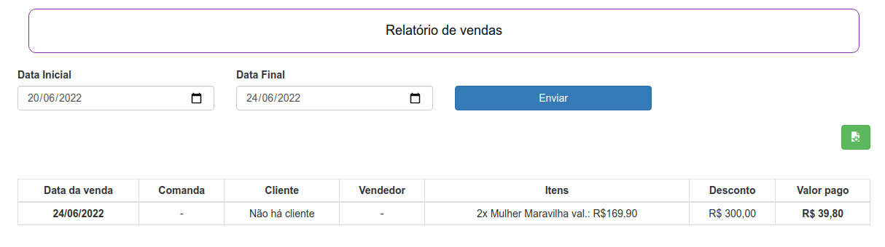
Aparecerá uma lista contendo as informações: data da venda, comanda (caso tenha), cliente (caso tenha), vendedor (caso tenha), itens da venda, desconto e o valor pago.
Relatório PDF
Para realizar o download em PDF do relatório
Clique no ícone
O download será iniciado.